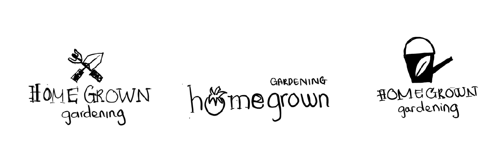

Making gardening enjoyable
A CASESTUDY
Homegrown Gardening is a collective of 15 home gardening enthusiasts sharing their knowledge and experience with the world. Noticing a growing trend of home gardening and urban gardening during the Pandemic, a group chat among a few friends turned into a content-heavy Facebook Page quickly surfaced the need for a full-fledged blog.
Homegrown provides information and resources for anyone interested in getting started with or maintaining a home garden but is particularly popular with young suburban families and single adults in urban areas.
Capturing gardening enthusiasts
With a great social media following, Homegrown needed an effective UI design that captures their passion for gardening, love of sharing information, and wealth of knowledge.
My responsibilities
Competitive analysis
Sitemap
Visual UI
Target users
From a Facebook group with thousands of members sharing gardening knowledge, homegrown has been growing fast and needed a complete website UI. The Homegrown audience is largely female, ranging from 25 to 68 years old, and are either urban singles or married suburbans. Based on this data, a persona was created to help increase empathy and visualize our target users.
Branding
Moodboard
The personality of Homegrown is defined as informative, fresh, joyful, helpful, enthusiastic, and fresh.

Sketches
I came up with three sketches for the new logo design. The logo needed to express a bright vibe and fun sensibility. Therefore, explorations included references to objects such as fruits and gardening tools.
Styleguide
In order to bring the freshness of green plants and the sunshine of the morning garden into the design, Homegrown's color palette was a combination of teal green and soft yellow-orange.
I chose the font Yrsa for the headers and Filson Soft for the body because these two will give the website a soft and friendly look. More than that, the Filson Soft with a tall x-height would be ideal for screen reading for long content.

Interface design
The goal was to keep a clean look, so the layout was structured in a simple layout with lots of negative spaces and photos. The main topics can be easy to navigate on the home screen with seven circled images, and the audience can efficiently pick their topics and content within a few steps.
A mini slideshow planned on top of the design appeared as the hero image of the landing page to catch the audience's attention and gain more interest.

Next steps
- For Homegrown, it was crucial that the blog should be a fun, so the user flow would need more attention to catching user's impressions and gaining their engagement.
- In the next phase, a forum website UI should be designed because Homegrown has a big community with many user interactions.
- Other features like the user's account can be so helpful in gathering information for Homegrown and users.